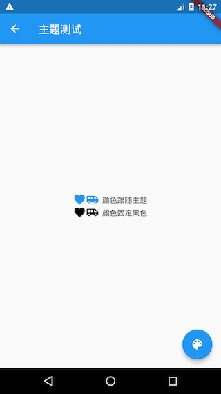
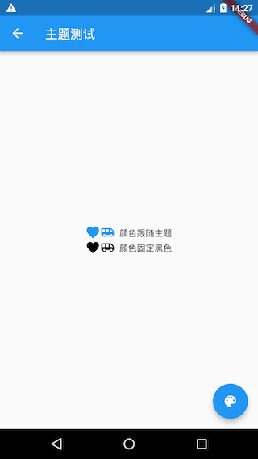

7.4 颜色和主题¶
7.4.1 颜色¶
在介绍主题前我们先了解一些Flutter中的Color类。Color类中颜色以一个int值保存，我们知道显示器颜色是由红、绿、蓝三基色组成，每种颜色占8比特，存储结构如下：
| Bit（位） | 颜色 | | ——— | —————- | | 0-7 | 蓝色 | | 8-15 | 绿色 | | 16-23 | 红色 | | 24-31 | Alpha (不透明度) |
上面表格中的的字段在Color类中都有对应的属性，而Color中的众多方法也就是操作这些属性的，由于大多比较简单，读者可以查看类定义了解。在此我们主要讨论两点：色值转换和亮度。
如何将颜色字符串转成Color对象¶
如Web开发中的色值通常是一个字符串如”#dc380d”，它是一个RGB值，我们可以通过下面这些方法将其转为Color类：
Color(0xffdc380d); //如果颜色固定可以直接使用整数值
//颜色是一个字符串变量
var c = "dc380d";
Color(int.parse(c,radix:16)|0xFF000000) //通过位运算符将Alpha设置为FF
Color(int.parse(c,radix:16)).withAlpha(255) //通过方法将Alpha设置为FF
颜色亮度¶
假如，我们要实现一个背景颜色和Title可以自定义的导航栏，并且背景色为深色时我们应该让Title显示为浅色；背景色为浅色时，Title显示为深色。要实现这个功能，我们就需要来计算背景色的亮度，然后动态来确定Title的颜色。Color类中提供了一个computeLuminance()方法，它可以返回一个[0-1]的一个值，数字越大颜色就越浅，我们可以根据它来动态确定Title的颜色，下面是导航栏NavBar的简单实现：
class NavBar extends StatelessWidget {
final String title;
final Color color; //背景颜色
NavBar({
Key key,
this.color,
this.title,
});
@override
Widget build(BuildContext context) {
return Container(
constraints: BoxConstraints(
minHeight: 52,
minWidth: double.infinity,
),
decoration: BoxDecoration(
color: color,
boxShadow: [
//阴影
BoxShadow(
color: Colors.black26,
offset: Offset(0, 3),
blurRadius: 3,
),
],
),
child: Text(
title,
style: TextStyle(
fontWeight: FontWeight.bold,
//根据背景色亮度来确定Title颜色
color: color.computeLuminance() < 0.5 ? Colors.white : Colors.black,
),
),
alignment: Alignment.center,
);
}
}
测试代码如下：
Column(
children: <Widget>[
//背景为蓝色，则title自动为白色
NavBar(color: Colors.blue, title: "标题"),
//背景为白色，则title自动为黑色
NavBar(color: Colors.white, title: "标题"),
]
)
运行效果如图7-4所示：

MaterialColor¶
MaterialColor是实现Material Design中的颜色的类，它包含一种颜色的10个级别的渐变色。MaterialColor通过”[]”运算符的索引值来代表颜色的深度，有效的索引有：50，100，200，…，900，数字越大，颜色越深。MaterialColor的默认值为索引等于500的颜色。举个例子，Colors.blue是预定义的一个MaterialColor类对象，定义如下：
static const MaterialColor blue = MaterialColor(
_bluePrimaryValue,
<int, Color>{
50: Color(0xFFE3F2FD),
100: Color(0xFFBBDEFB),
200: Color(0xFF90CAF9),
300: Color(0xFF64B5F6),
400: Color(0xFF42A5F5),
500: Color(_bluePrimaryValue),
600: Color(0xFF1E88E5),
700: Color(0xFF1976D2),
800: Color(0xFF1565C0),
900: Color(0xFF0D47A1),
},
);
static const int _bluePrimaryValue = 0xFF2196F3;
Colors.blue[50]到Colors.blue[900]的色值从浅蓝到深蓝渐变，效果如图7-5所示：

7.4.2 Theme¶
Theme组件可以为Material APP定义主题数据（ThemeData）。Material组件库里很多组件都使用了主题数据，如导航栏颜色、标题字体、Icon样式等。Theme内会使用InheritedWidget来为其子树共享样式数据。
ThemeData¶
ThemeData用于保存是Material 组件库的主题数据，Material组件需要遵守相应的设计规范，而这些规范可自定义部分都定义在ThemeData中了，所以我们可以通过ThemeData来自定义应用主题。在子组件中，我们可以通过Theme.of方法来获取当前的ThemeData。
注意：Material Design 设计规范中有些是不能自定义的，如导航栏高度，ThemeData只包含了可自定义部分。
我们看看ThemeData部分数据定义：
ThemeData({
Brightness brightness, //深色还是浅色
MaterialColor primarySwatch, //主题颜色样本，见下面介绍
Color primaryColor, //主色，决定导航栏颜色
Color accentColor, //次级色，决定大多数Widget的颜色，如进度条、开关等。
Color cardColor, //卡片颜色
Color dividerColor, //分割线颜色
ButtonThemeData buttonTheme, //按钮主题
Color cursorColor, //输入框光标颜色
Color dialogBackgroundColor,//对话框背景颜色
String fontFamily, //文字字体
TextTheme textTheme,// 字体主题，包括标题、body等文字样式
IconThemeData iconTheme, // Icon的默认样式
TargetPlatform platform, //指定平台，应用特定平台控件风格
...
})
上面只是ThemeData的一小部分属性，完整的数据定义读者可以查看SDK。上面属性中需要说明的是primarySwatch，它是主题颜色的一个”样本色”，通过这个样本色可以在一些条件下生成一些其它的属性，例如，如果没有指定primaryColor，并且当前主题不是深色主题，那么primaryColor就会默认为primarySwatch指定的颜色，还有一些相似的属性如accentColor 、indicatorColor等也会受primarySwatch影响。
示例¶
我们实现一个路由换肤功能：
class ThemeTestRoute extends StatefulWidget {
@override
_ThemeTestRouteState createState() => new _ThemeTestRouteState();
}
class _ThemeTestRouteState extends State<ThemeTestRoute> {
Color _themeColor = Colors.teal; //当前路由主题色
@override
Widget build(BuildContext context) {
ThemeData themeData = Theme.of(context);
return Theme(
data: ThemeData(
primarySwatch: _themeColor, //用于导航栏、FloatingActionButton的背景色等
iconTheme: IconThemeData(color: _themeColor) //用于Icon颜色
),
child: Scaffold(
appBar: AppBar(title: Text("主题测试")),
body: Column(
mainAxisAlignment: MainAxisAlignment.center,
children: <Widget>[
//第一行Icon使用主题中的iconTheme
Row(
mainAxisAlignment: MainAxisAlignment.center,
children: <Widget>[
Icon(Icons.favorite),
Icon(Icons.airport_shuttle),
Text(" 颜色跟随主题")
]
),
//为第二行Icon自定义颜色（固定为黑色)
Theme(
data: themeData.copyWith(
iconTheme: themeData.iconTheme.copyWith(
color: Colors.black
),
),
child: Row(
mainAxisAlignment: MainAxisAlignment.center,
children: <Widget>[
Icon(Icons.favorite),
Icon(Icons.airport_shuttle),
Text(" 颜色固定黑色")
]
),
),
],
),
floatingActionButton: FloatingActionButton(
onPressed: () => //切换主题
setState(() =>
_themeColor =
_themeColor == Colors.teal ? Colors.blue : Colors.teal
),
child: Icon(Icons.palette)
),
),
);
}
}
运行后点击右下角悬浮按钮则可以切换主题，如图7-6、7-7所示：
 

需要注意的有三点：
可以通过局部主题覆盖全局主题，正如代码中通过Theme为第二行图标指定固定颜色（黑色）一样，这是一种常用的技巧，Flutter中会经常使用这种方法来自定义子树主题。那么为什么局部主题可以覆盖全局主题？这主要是因为widget中使用主题样式时是通过
Theme.of(BuildContext context)来获取的，我们看看其简化后的代码：static ThemeData of(BuildContext context, { bool shadowThemeOnly = false }) { // 简化代码，并非源码 return context.dependOnInheritedWidgetOfExactType<_InheritedTheme>().theme.data }
context.dependOnInheritedWidgetOfExactType会在widget树中从当前位置向上查找第一个类型为_InheritedTheme的widget。所以当局部指定Theme后，其子树中通过Theme.of()向上查找到的第一个_InheritedTheme便是我们指定的Theme。本示例是对单个路由换肤，如果想要对整个应用换肤，则可以去修改
MaterialApp的theme属性。